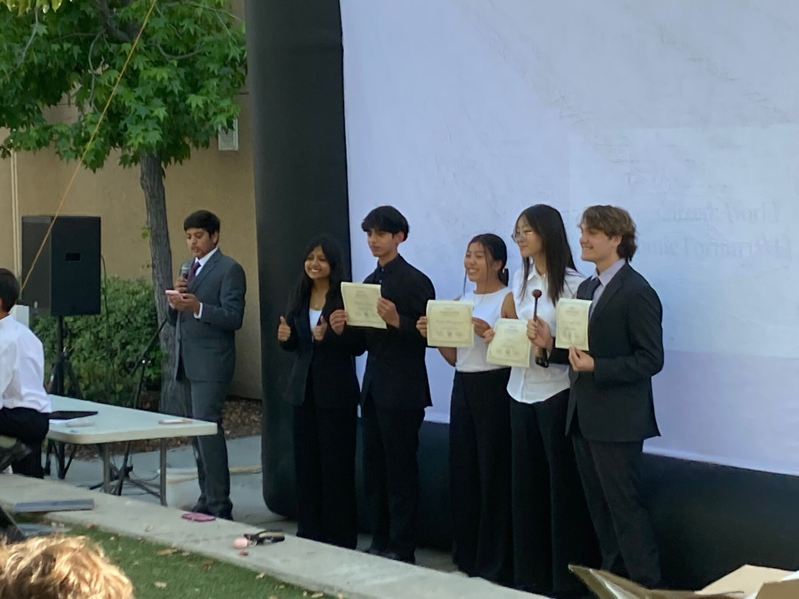

Awards & Honors
Recipient, Sabrina Zhang Award
$700 school grant to fund Vermighty, turning a set of sketches into a two-chamber composting system now situated on campus for testing and school curriculum integration.
Top 100 Finalist (Top 1%), Blue Ocean Student Entrepreneur Competition
Selected as a Top 100 Global Finalist from 12,000+ student participants across 163 countries for Vermighty.
Award-Winning Photographer, Scholastic Art & Writing Awards
Two Silver Keys and an Honorable Mention in Photography, out of roughly 110,000 entrants. The pieces were Above the Noise, The Crowd and the Sea, and Stones That Remember.
Outstanding Delegate, Northwood High School Model UN Conference
Represented Al Gore in a committee on energy consumption and climate policy, earning Outstanding Delegate for my research, speeches, and negotiation.
2nd Place, GNEC Hackathon
Selected out of 3,000 participants for "TarantulaX," a solar-powered reverse osmosis drone. I've since stayed on with GNEC as a partnerships coordinator and a judge.